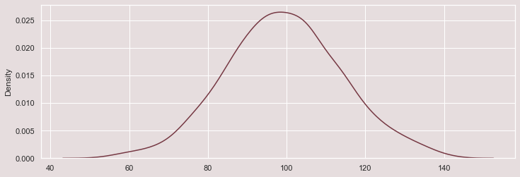

During hypothesis testing we confirm whether results we got is by chance ? If yes then experiment won’t be repeatable and so has little use.
There are two ways of doing hypothesis testing.
- Using P-Value
- Using Critical Values
Let’s start with business case problem.
Q :- Suppose that a PM claims that users on average spend about Rs. 50 per month on Amazon. However, you doubt this claim, and you believe that the average should be higher. So you sample 100 users and learn that the sample mean is Rs. 85. Would you reject the PM’s claim? Assume population standard deviation is 20.
P-Value approach
- Hypothesis
- Significance level
- Test Statistics
- Probability of observing test statistics
- Statistical Decision
1. Hypothesis
Ho : the average spend per user is Rs. 50
Ha : the average spend per user is greater than Rs. 50
2. Significance level
\(\alpha = 0.05\)
3. Test Statistics
\[ Z-statistics = \frac{\overline{X}-\mu}{\sigma/\sqrt{n}} \]
\[ = \frac{85-50}{20/\sqrt{100}} =\frac{35}{2} = 17.5 \]
4. Probability of observing test statistics
Looking into standard normal distribution table.
\(P-value < 0.0001 < \alpha = 0.05\)
5. Statistical Decision
At alpha = 0.05 there is statistical significance to reject PM’s claim and conclude that the average spend per user is greater than Rs. 50.
Business Case problem
Q :- A Principal claims that the student in his school are above average intelligence. A random sample of 30 IQ scores have a mean of 112.5. Is there sufficient evidence to support the principal’s claim? The mean population IQ is 100 with standard deviation is 15.
Critical Value Approach
- Hypothesis
- Significance level
- Test Statistics
- Critical Value
- Statistical Decision
1. Hypothesis
Ho : the average IQ score is 100
Ha : the average IQ score is greater than Rs. 100
2. Significance level
\(\alpha = 0.05\)
3. Test Statistics
\[ Z-statistics = \frac{\overline{X}-\mu}{\sigma/\sqrt{n}} \]
\[ = \frac{112.5-100}{15/\sqrt{30}} = 4.56 \]
4. Z Critical Value
Looking into standard normal distribution table.
\(Z Critical-value = 1.645\)
5. Statistical Decision
At alpha = 0.05 test statistics is greater than Z Critical value hence we can reject null hypothesis.